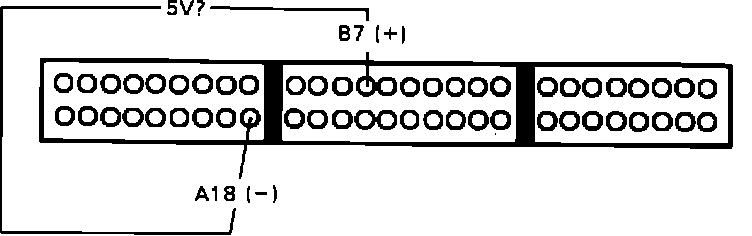
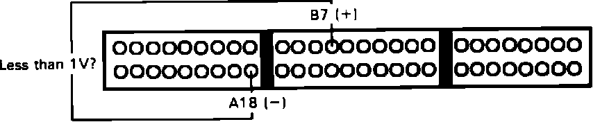

Inspection Procedure
Prior to inspection, verify that all A/T shift position indicators illuminate. If shift indicator does not function properly, refer to CHASSIS ELECTRICAL DIAGRAMS for additional information.1. Install test harness between ECU and harness connector. If test harness is not available, carefully backprobe wires at ECU connector.
2. Disconnect test harness connector B from main harness, leave connected to ECU.
A/T Shift Position Signal Diagnosis:

3. With ignition on, measure voltage between terminals B7 and A18.
Approx. 5 volts, proceed to next step.
Not approx. 5 volts, replace electronic control unit. End of test.
4. Turn ignition off and reconnect test harness connector B to main harness.
A/T Shift Position Signal Diagnosis:

5. Turn ignition back on and check voltage between terminals B7 and A18 with transmission in NEUTRAL.
Less than 1 volt, proceed to step 7.
Not less than 1 volt, proceed to next step.
6. Repair open GRN wire wire between ECU terminal B7 and instrument cluster or between instrument cluster and console mounted shift postion switch. End of test.
7. Check voltage between terminals B7 and A18 with transmission in PARK.
Less than 1 volt, proceed to step 9.
Not less than 1 volt, proceed to next step.
8. Repair open GRN/WHT wire between console shift position switch and instrument cluster. End of test.
9. Check voltage between terminals B7 and A18 with transmission in any DRIVE gear.
Approx. 5 volts, proceed to step 11.
Not approx. 5 volts, proceed to next step.
10. Repair short in GRN wire between ECU terminal B7 and instrument cluster. End of test.
11. Shift position switch functioning normally, no further testing required.